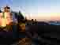
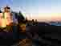

روز جمعه کلاس برنامه سازی تحت وب
برگزار می گردد.
بر خلاف هارد دیسکها که کارایی آنها بسیار به هم نزدیک است، کارایی درایوهای SSD، حتی دو مدل مختلف از یک سازنده میتواند بسیار متفاوت باشد. یکی از نکات مهم در خرید درایوهای SSD، طول عمر یا دوام است، چرا که تعداد دفعات خواندن و نوشتن درایوهای SSD یا به طور دقیقتر سلولهای حافظه SSD کاملاً محدود است. از این رو هیچ عجیب نیست که درایوهایی با طول عمر، کارایی و سرعت خواندن و نوشتن بسیار متفاوت در دسترس هستند.
عمولاً سازندگان درایوهای SSD، طول عمر تخمینی محصولات خود را ذکر می کنند. این مقدار که واحد آن ساعت است، بیانگر فاصله تخمینی بین خرابی درایو است. هرچه که M.T.B.F درایو بالاتر باشد، شانس خرابی آن کمتر خواهد بود.
 
